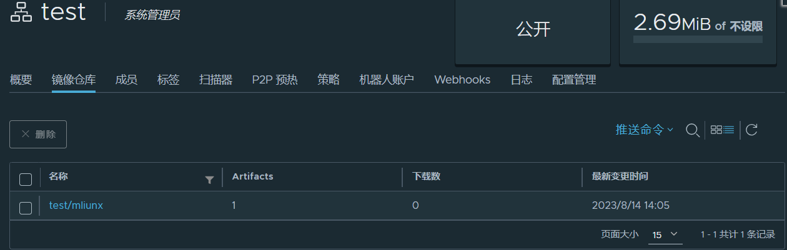

Description：
部署企业私有仓库往往是很有必要的, 它可以帮助你管理企业的一些敏感镜像同时由于Docker Hub的下载速度和GFW的原因, 往往需要将一些无法直接下载的镜像导入本地私有仓库而Harbor就是部署企业私有仓库的一个不二之选。
harbor搭建实战
关闭防火墙和selinux
1 | [root@docker01 ~]# systemctl stop firewalld.service |
hosts
1 | [root@docker01 ~]# cat /etc/hosts |
harbor
1 | [root@docker01 ~]# ls |
harbor.yml
1 | hostname: docker01 |
docker.service
1 | [Service] |
重启服务
1 | [root@docker01 system]# systemctl daemon-reload |
prepare
1 | [root@docker01 harbor]# ./prepare |
common.sh
1 | 119 elif [[ $(docker compose version) =~ (([0-9]+)\.([0-9]+)([\.0-9]*)) ]] |
install.sh
1 | 26 DOCKER_COMPOSE="docker compose" |
1 | [root@docker01 harbor]# ls |
docker images
1 | [root@docker01 harbor]# docker images |
1 | [root@docker01 harbor]# docker ps -a |
管理使用
1 | [root@docker01 harbor]# docker push 192.168.24.150:5868/test/mliunx:v |

pull
1 | [root@docker01 harbor]# docker pull 192.168.24.150:5868/test/mliunx:v |
使用
1 | [root@docker01 harbor]# docker run -it --name mlinux 192.168.24.150:5868/test/mliunx:v |